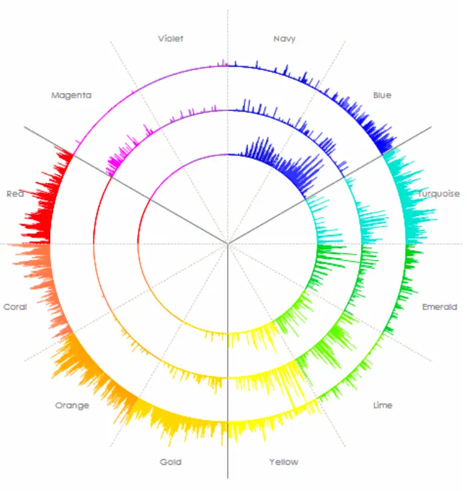

その感覚、私にもありました。
何年も、ずっとそこにいた。
一人で抱え続けるのは、苦しすぎますよね。

特許技術による声紋分析。
6秒の声が、このように可視化されます。
私は、救急救命士（国家資格）として20年以上、生死の現場で2,000名以上と向き合ってきました。
今はその経験をもとに、6秒の声から本音を可視化する声紋分析を用いて、ずっと求めていた人生を掴むサポートをしています。
「やっと、自分の方向が見えた」
そう感じるきっかけを、このLINEで届けています。
登録は30秒です。
無料 公式LINE 友だち追加「周りからは恵まれていると言われる。
なのに、心のどこかがずっと渇いている。」
「このまま定年まで続けるのか。
そう気づいた瞬間、息が詰まった。」
「あんな上司にはなりたくない、と思っていた。
気づいたら、自分がその姿に近づいていた。」
「上からの指示をこなしながら、
これって何のためにやってるんだろう、と思う。」
「頼られるようになった。
でも、このまま自分を殺して終わってたまるか。」
「子供が生まれて、守るものができた。
だからこそ、このまま終わったら絶対に後悔する。」
「飛び出す勇気はまだない。
でも、このまま染まっていくのは絶対に嫌だ。」
「本を読んだ。学んだ。でも気づけば何年も経っていた。
何も変わっていない自分が怖い。」
「いつか動こう、とずっと思っている。
なのに、いつまで同じ場所にいるんだろう。」
「変わりたいと思っている。
でも、また今日も何もしなかった。」
「肩書きを外したら、何も残らない気がする。」
「やりたいことが、もう自分でもわからない。」
「正解なんてない。動くしかない。
わかってるのに、動けない。」
「言い訳だけが、どんどん上手くなっていく。」
「こんな自分を、ずっと好きになれない。」
自分という軸が、なかった。
それを隠すために鎧を着た。
強がり、変わり者を演じ、全部一人で抱え込んだ。
できることは増えた。スキルも増えた。評価もされた。
でも、人とつながれない孤独感が
ずっと、心の奥にあった。
どうにかしたくて、学んだ。
スピリチュアル、ビジネス、自己啓発。
知識が入るたびに「これだ」と思った。
でも、時間が経つと気づく。
何年も、何も変わっていない。
家庭ができた。家族ができた。
人並みの生活は、ちゃんとできていた。
それでも、消えない違和感があった。
自分の人生に対する、深い不完全燃焼感。
たどり着いたのは、自分の内側を見ることだった。
声紋分析で、自分がどう出来上がったかが見えた。
自分の弱さを、初めて認めた。
その瞬間、ずっと着ていた鎧が外れた。
一人ではできなかった。
良きコーチ、良き出会い、良き場があった。
その場で初めて、まっさらな自分と向き合えた。
以前の自分とは、まるで違う人間になっていると思う。
変わったのは、意識だけだった。
でも、意識が変わったら、
今まで目に入らなかった情報が見えるようになった。
今まで手を出せなかったことに、手を出せるようになった。
常に枠を超えることを意識し続けて、今がある。
来年の自分は、今の自分が想像できない場所にいる。
そう思える人生を、初めて生きている。
声紋分析コーチ 若林寛紀
国家資格・救急救命士 / 生命の最前線の現場で20年以上従事
言葉は取り繕えます。
でも、声の周波数だけは、本音を隠せません。
声紋分析は、たった6秒の声から、自分でも気づいていない本音を12色のカラーバランスとして可視化します。
12色のバランスが、あなたの本音を映し出します。
感覚ではなく、データとして自分を見る。
「そうかもしれない」と素直に受け取れるのは、人間ではなく機械が出したデータだからです。
その客観的な現在地から、本当に必要な一歩が見えてくる。
この技術は、物理学者・心理学者である柊木匠氏が確立したものです。2万人以上の統計データをもとに体系化され、企業・病院・大学など約200の組織に導入されています。
なぜ、同じ場所に留まり続けてしまうのか。
その答えが、声の中にあります。
「やっと、自分の方向が見えた」
そう感じるきっかけを、このLINEで届けています。
登録は30秒です。
無料 公式LINE 友だち追加※無料で情報発信中です。